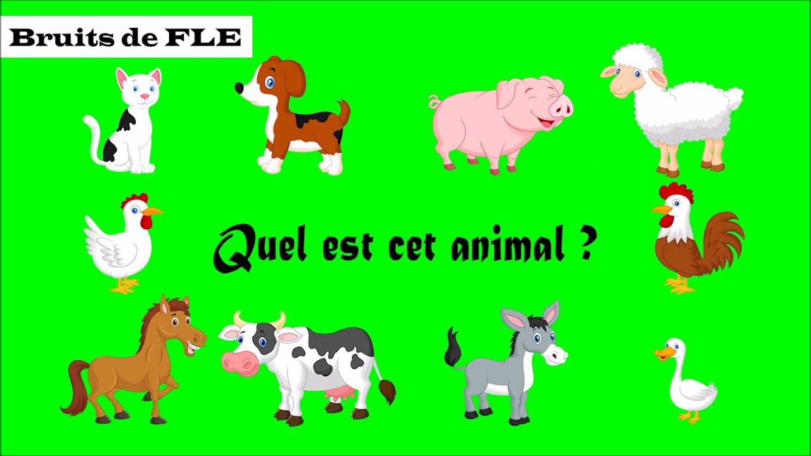

| logo |
|
home |
produit |
historique |
Contact |
Animaux domestiques

jardinage lemonde
Les animaux sont de plus en plus intégrés au fonctionnement du jardin : au delà des auxiliaires classiques et sauvages,
les animaux domestiques de basse-cour, notamment, complètent le tableau du jardin en jouant un rôle positif...
Ceci est d'autant plus vrai que vous avez des enfants à la maison :
la présence et l'entretien d'animaux de compagnie leur permettra d'entretenir une relation proche et affectueuse avec certains comme le chat ou le chien,
mais d'autres animaux tels que la poule les initiera aussi au recyclage des déchets avec, à la clé,
la récompense de ramasser des oeufs frais !
Les animaux sont complémentaires et inséparables de la création d'un jardin !